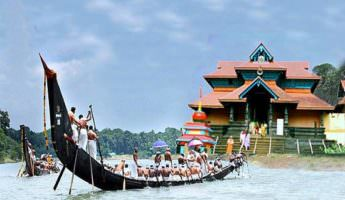
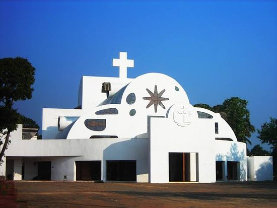

Pathanamthitta
Pathanamthitta is a landlocked district, . The district can be divided into three natural geographical regions: the highland, the midland and the lowland. The highland stretches through the Western Ghats, where the hills are tall and covered with thick forests. Western Ghats maintains an average altitude of around 800 m. It descends to the smaller hills of midland in the centre and finally to the lowland. The lowland with its abundance of coconut trees, lies along the eastern borders of Alappuzha district.
Top Destinations

Sabarimala
More than 30 million pilgrims visit the temple in Sabarimala annually, making it the largest in India and second largest in the world, after Hajj Pilgrimage of Mecca in Saudi Arabia. Located inside the Periyar Tiger Reserve, in the Pathanamthitta district of Kerala, Sabarimala is a temple town on the bank of the River Pampa. The temple is situated amidst eighteen hills and dense forest surrounding the temple, which is known as Poongavanam. People trek up the mountains from Plapalli, proceeding to Aangaamuzhi, and then to Muzhiyaar and finally to Sabarigiri road. The temple is open on the first five days of each Malayalam month with it being most crowded during Mandalapooja, Makaravilakku or Makar Sankranti.
Aranmula
Visitors to Pathanamthitta district are never really sure of what to expect from Aranmula. This is mostly due to the lore surrounding this exotic village, famous for the genius of its craftsmen and the ancient vibe one experiences the moment oneenters. Aranmula is famous for its Aranmula Kannadi (metal mirrors), the centuries’ old Sree Krishna Temple, the unique ritualistic feast of `Vallasadya,’ and famed Aranmula Boat Race and the list goes on. It gets its name from the centuries-old Aranmula Parthasarathy Temple (dedicated to Sree Krishna) on the banks of the holy River Pamba, a virtual hotbed of devotees. The murals, carvings and paintings here have inspired much awe and interest. It is also the venue for the Aranmula Vallasadya, a ritual offering to the deity Lord Parthasarathy in which the oarsmen of the snake boats are offered a feast. With over 70 dishes it is probably one of the largest vegetarian feasts in India. (Watch the video of Vallasadya) Its legendary Vijnana Kalavedi houses some of the finest classes and teachers for a variety of art forms like Kathakali, classical dances, classical music and Kalaripayattu. Visitors can stay here for an extended period and observe the ancient crafts being passed on diligently to the next generation.
Parumala
The village of Parumala is a small stretch of land on the shores of the river Pampa. Before the church was built, the Malankara Metropolitan, Joseph Mar Dionysius wanted to establish a seminary in the area. In 1885's a two-acre plot of land was donated by Arikupurathu Mathen Karnavar to Mar Dionysius. With the land there was already a temporary church built by the Arukupurathu Family. Mar Gregorios decided to rebuild the temporary church into a more befitting and beautiful church. Mar Gregorios used the personal gifts he received as well as the donations from parishes to build a church and adjoining seminary building. On the feast of the Mother of God, Greogorios temporarily consecrated the church and celebrated the divine Eucharist in the presence of Dionysius. The first building was called "Azhippura" and was used for teaching church functionaries for the Orthodox Church, including providing lessons in Syriac. Dionysios eventually passed the responsibility for the seminary to Mar Gregorios in order to carry on the Syriac teaching sessions more efficiently and also to help him in other church matters. The Church is dedicated to the Apostles Peter and Paul.